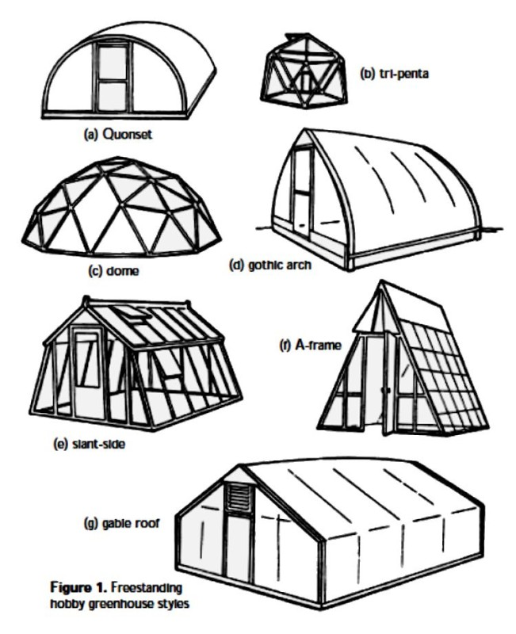
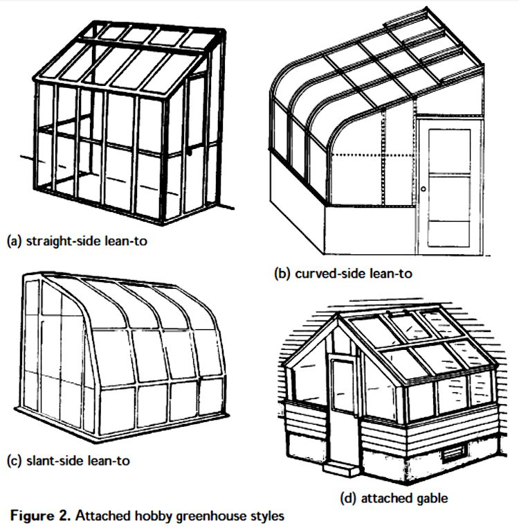
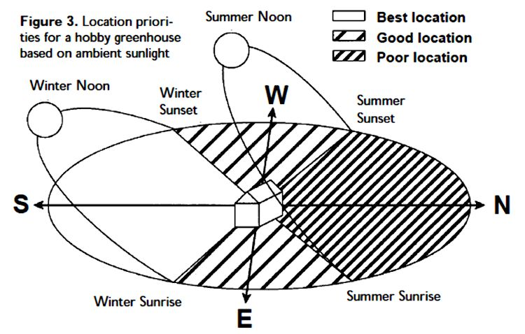
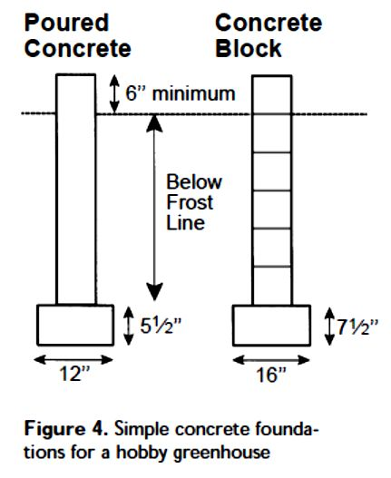
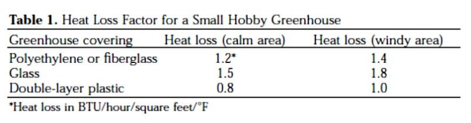

Hobby Greenhouse Construction
Introduction
A hobby greenhouse can add a new dimension to the usefulness and productivity of a home garden. Tropical plants can be grown and enjoyed yearround, or seasonal plants can be grown to get a head start on spring. However, the costs of building a hobby greenhouse can vary from several hundred dollars to thousands, and operating costs can also be high if year-round heating and cooling are required.
You may decide to build a greenhouse or to purchase a greenhouse kit. Before you decide whether to build or buy, examine as many greenhouse styles and equipment options as possible. A greenhouse is a long-term investment that should provide the growing area and service desired while blending well with the home and landscape.
Greenhouse Kits
Greenhouse kits are available in a wide range of costs and with a wide range of features. Prices range from a few hundred dollars to well over $5,000 depending on the size, style, accessories, and type of construction materials. Manufacturers can be found in the yellow pages of a telephone book, in advertisements in gardening magazines, by searching the Web, or by contacting the Hobby Greenhouse Association (8 Glen Terrace, Bedford, MA 01730-2048).
Compile a list of manufacturers, and request information on different models. Compare costs and features for the style and size you are interested in. Generally, plastic-covered greenhouses are easier to assemble than glass houses are. However, if any aspect of the assembly is beyond your skills, many manufacturers will erect their products on-site for an additional fee.
Build Your Own
A hobby greenhouse can be constructed easily and inexpensively by anyone able to use simple hand tools. Most of the construction materials can be purchased at building supply stores. Materials may also be available inexpensively at construction sites or salvage yards. If any aspect of the construction is beyond your skills, you may be able to hire a local carpenter or handyman to help. Plans for different styles of hobby greenhouses are provided at the end of this publication.
When you do decide to build a greenhouse, choosing the type of structure, covering, and environmental control equipment can be confusing. A step-by-step approach can help you organize the planning and implementation of your hobby greenhouse.
Step 1: Decide what plants you will grow, what times of year you will use the greenhouse, and how a greenhouse fits into your lifestyle.
For example, you might want to use the greenhouse in one of the following ways:
- To start vegetable or flower seeds or propagate cuttings in the spring to plant in the garden. On a small scale, this can be accomplished with a structure as simple as an outdoor cold frame or hotbed. A freestanding greenhouse can also be used for this purpose but will probably be a simple and inexpensive model.
- To grow year-round tropical foliage in a conservatory setting. A greenhouse for this purpose will probably be more permanent and formal.
- To grow specialty flowers or ornamentals. Many greenhouses are constructed because owners develop an interest in speciality flowers or ornamentals that have unique requirements, such as orchids, African violets, or bromeliads. These greenhouses should be designed with the needs of the particular plant in mind.
A hobby greenhouse can be a part of your home in the form of a sun-room or porch. Sunrooms or porches usually have clear covering on one or more sides but not on the roof. A greenhouse can also be attached to the house, with an entrance to the living area. Plants, walks, furniture, a water pond, or a fountain may also be included and arranged formally or informally as an extended living room. Plants may “spill over” from the greenhouse through a sliding glass door into the living area of the home. This type of greenhouse can be used for relaxing, reading, or family gatherings.
Step 2: Decide what style of greenhouse to build.
Greenhouse design styles vary widely and include Quonset, tri-penta, dome, gothic arch, slant-side, A-frame, gable roof, straight-side lean-to, curved-side lean-to, and slant-side lean-to (Figures 1a-g and Figures 2a-c). Some styles are more suited to flexible coverings like polyethylene, such as the dome, gothic arch, Quonset, curved-side leanto, and tri-penta. Others work better with rigid coverings like glass or plastic, including the Aframe, gable roof, slant-side, and straight- or slant-side lean-to.
Some design styles are more efficient to heat and cool, such as the gable roof and Quonset. Others may look unusual and attractive but are difficult to construct or heat and cool, such as the dome and tri-penta. The Aframe style is easy to construct and is inexpensive, but the usable growing area is small and awkward, and the shape may not blend well with normal surroundings. The most commonly used styles are the gable roof, gothic arch, Quonset, and slantside lean-to.

In addition to deciding what style your greenhouse should be, you need to decide whether it will be freestanding or whether it will be attached to your home. Freestanding greenhouses stand alone in the landscape.
They can be constructed in a wider range of styles, can be larger, and can offer greater flexibility in location than attached greenhouses can. These greenhouses can be placed almost anywhere in the landscape where the ground is level and adequate light is available. The most widely used styles are the gable roof, gothic arch, Quonset, and slant-side.
Attached greenhouses are attached to the home and may or may not have an entrance to the home. They can be designed to blend with the architecture and landscape of the home and are useful where space is limited. An attached greenhouse may also cost less per square foot to build than a freestanding greenhouse. With an inside entrance, you can maintain the greenhouse without going outside during bad weather.
Utilities such as electricity, water, and heat can be shared with the home if a greenhouse is planned for during home construction. If the greenhouse is attached later, you may need an additional heater because greenhouses lose heat five to ten times faster than an equivalent area of home. The cost of heating an attached greenhouse may be less than that of heating a freestanding greenhouse of the same floor area because one wall is not exposed; however, attached greenhouses usually receive less light for the same reason.

Straight-side lean-to, slantside lean-to, and curved-side lean-to styles are ideally suited for small, easy-to-construct attached greenhouses (Figures 2ac), although the Quonset, gothic arch, slant-side, and gable roof (Figure 2d) freestanding styles can also be attached. A solid foundation similar to the house foundation is often required or highly desirable for attached greenhouses. Joining and sealing the greenhouse to the house needs special attention. Consult an architect or building contractor to determine the method of attachment.
Step 3: Choose a location for your greenhouse.
Often, there may be a limited choice of locations that will have adequate sunlight, adequate soil drainage, easy access for people and materials, access to utilities, and a pleasing blend with the landscape. For many homeowners, the appearance of the structure is most important, so compromises must be made to meet other location requirements. One of the most important location requirements is sun exposure.
Many flowering potted plants require full sun to perform well. A freestanding greenhouse for these plants should be constructed with the long sides of the building facing southeast to southwest (Figure 3). Vegetable and flower seedlings for transplanting outdoors in the spring need maximum sunlight, so choose a location that receives full sun. For plants requiring less light, the greenhouse can face northeast to southeast or northwest to southwest.
Exposure is particularly important for attached greenhouses. Consider these locations in order: first—south or southeast, second—east, third—southwest, fourth—west, and last—north.
Keep in mind that a western exposure can be too hot in summer, and a northern exposure usually does not receive enough light for most plants. Also be aware that tall structures and trees near the greenhouse may block light for parts of the day.

Falling limbs can also be a major problem if the greenhouse is located too close to trees.
Other location considerations include ensuring that the site is level and that the soil drains well. Many locations may have to be graded to ensure that the foundation is level. Slope the soil away from the greenhouse to drain rainwater away. If drainage is a problem, consider installing drainage tile before constructing the greenhouse.
Avoid low areas with poor air drainage, especially those surrounded by woods or buildings. Cold, humid air can stagnate in these locations and increase heating costs. Conversely, avoid high elevations with direct exposure to strong winter winds. Convective heat loss through the covering material can increase heating demand. The greenhouse should be convenient to a driveway to receive supplies and to haul away plants or garbage when needed. Walkways to and from the garden, house, and storage areas and access to water, fuel for heating, and electricity should all be considered.
The greenhouse should contribute to the appearance of the home and landscape and not be an eyesore either to the owner or neighbors. Consider room for expansion if you think you may be so inclined in the future.
Step 4: Choose a greenhouse size to suit your needs.
Available space and cost usually have a large impact on the choice of size for a hobby greenhouse. Keep in mind, however, that a greenhouse that is too small may cost more to operate than the initial cost of building a larger one. The obvious problem with a small greenhouse is that it is too small to meet the needs of the owner. In addition, temperatures can fluctuate rapidly in a small greenhouse, and heat losses can be as high as they are in a larger greenhouse. Small houses may also have limited headroom and be hard to work in. A taller, larger
greenhouse obviously has more space, and it heats and cools more uniformly than a shorter, smaller one.
As a starting point, 100 square feet would be a minimum size, but 200 square feet is better. A house 9 to 14 feet wide by 20 feet long can be managed in a few hours per week. A larger greenhouse can also cost less to cover per square foot than a small greenhouse, so choose a size slightly larger than you think you need. On the other hand, ask yourself, do you have the time and dedication to maintain a large greenhouse, now and in the future?
Step 5: Choose a covering material
There are several covering materials to choose from, each of which has its own advantages and disadvantages. Common covering materials are glass, polyethylene film, fiberglass reinforced panels, and double-layer structured panels.
Glass
Glass is the traditional greenhouse covering against which all others are judged. Good-quality glass is an attractive, very transparent, and formal (in appearance) covering material. It is
very strong (tensile strength), but it is subject to shattering and can become brittle with age. Glass is also very expensive and because of its weight requires sturdier framing support than is required with other covering materials.
Originally, glass panes for greenhouses were 18 by 16 inches, but larger sizes are more common now. Actually, larger panes are less fragile than smaller panes. Many greenhouses are covered with double-strength float glass (1/8 inch thick) costing $0.85 to $2.00 per square foot. Large glass panes in many more expensive greenhouse kits are tempered glass (5/32 inch thick) costing $3.00 to $7.00 per square foot, depending on the pane size.
Polyethylene Film
Polyethylene film (PE) is a good choice for home-built greenhouses because less structural support is required and it costs much less than other materials. However, PE film only lasts about 2 years. Clear PE is used for growing most plants, but white PE can be used to reduce light and heat for growing lowlight plants or for propagation.
PE manufactured for greenhouse application comes in widths from 10 to 50 feet, thicknesses from 1 to 8 millimeters, and costs $0.06 to $0.09 per square foot. Two layers of PE are frequently applied to greenhouses to reduce heating demand.
Double-layer PE houses generally cost 30 to 40 percent less to heat than single-layered houses do. The two layers are kept airinflated by a 100- to 150-cubicfoot-per-minute squirrel cage blower mounted to the inside PE layer. Purchase 4-millimeter PE for the inside and 4- or 6-millimeter PE for the outside. Use 6-millimeter PE for single-layer applications.
PE can be installed on wood-frame greenhouses by nailing wood batten strips over the film into the foundation boards and rafters or arches. However, because PE must be replaced frequently, investing in special fasteners makes the job easier. Fastening systems are available for single- or double layer applications.
Fiberglass Reinforced Panels
Fiberglass reinforced panels (FRPs) are rigid plastic panels made from acrylic or polycarbonate that come in large corrugated or flat sheets. FRPs are available in 24- to 57-inch widths and up to 24-foot lengths. FRPs are durable, retain heat better than glass does, and are lightweight (less structural support needed). Large panels are flexible enough to be applied to a Quonset greenhouse. Light transmission may be better than glass simply because less structural support is needed, which creates less shadow. The prices of FRPs range from $1.00 to $1.25 per square foot, depending on the guaranteed life span of the material. Inexpensive materials may be guaranteed for as little as 5 years; more expensive types may be guaranteed for as long as 20 years.
Double-Layer Structured Panels
Acrylic or polycarbonate double-layer structured panels (DSPs) are made of two layers of plastic held apart by ribs spaced 1⁄2 to 1 inch apart. The double layer construction increases structural strength and heat retention but decreases light transmission compared to single-layer materials. Panels are 4 feet wide and up to 39 feet long. DSPs made of polycarbonate cost $1.75 to $2.50 per square foot, and those made of acrylic cost $2.00 to $3.50 per square foot.
Step 6: Choose the framing materials
To a large extent, this choice will be influenced by the type of covering material chosen, the desired permanence, and costs. Many homemade greenhouses are made of wood. Be sure to purchase treated lumber for exterior use. Metal-framed greenhouses are more permanent but are difficult for do-it-yourself projects from scratch. However, greenhouse manufacturers offer many kits that are easy to erect and are reasonably priced.
Aluminum or galvanized framing last a long time with little maintenance. Schedule 80 PVC pipe can also be used as supports for small Quonset-style greenhouses that are to be covered in PE, but PVC requires extra support to withstand strong wind.
Whatever the choice, the framing must adequately support the covering and any equipment and/or hanging baskets suspended from the framing. The framing must also be able to withstand wind, rain, snow, or ice common to the geographic location.
The load exerted by hanging baskets can be greater than that caused by weather. Wood preservatives for greenhouse framing and benches should be pressure-treated, salt type, or copper naphthenate.
Avoid creosote (no longer legal) and pentachlorophenol preservatives—these are dangerous for people and toxic to plants. The eave height for a gable roof greenhouse should be at least 51⁄2 feet with a minimum gable height of 8 feet. However, gable heights of 10 to 15 feet are common. Roof pitch for a glass greenhouse should be 6-inch rise per foot (27 degrees) to prevent inside condensation from dripping on plants. Plastic-covered greenhouses require a steeper pitch of 7- to 81⁄2-foot rise per foot to prevent drip.
Step 7: Choose the foundation and sidewall materials
Greenhouses to be covered in PE usually do not require an extensive foundation, but the support posts must be set in concrete footings. The problem with a PE-covered Quonset house is usually not holding it up but holding it down. In strong wind, the shape of the house makes it function like an airplane wing, and it may lift off the ground. Figure 4 shows a simple poured concrete footing and a concrete block foundation.

Attached greenhouses and those covered with glass should have a strong concrete or concrete block foundation that extends below the frost line according to local building codes.
A 2- to 3-foot-high sidewall can add considerably to the appearance of a greenhouse. Concrete block, stone, or brick are the most popular materials used, but shingle, clapboard, and asbestos rock have also been used.
Choose the type that works best with the overall architectural scheme.
Step 8: Choose the type of floor and walkways
In many places where drainage is adequate, a solid floor is not necessary. Four inches of 3⁄4-inch crushed stone or
pea gravel will help control weeds and provide a porous medium for water to evaporate in the summer to provide some cooling. If you want a solid concrete floor, install one or more French drains, and slope the floor toward the drains. Don’t forget to plan for plumbing when planning the foundation.
Walkways can be constructed of concrete for easy movement of equipment and people, especially if a family member is disabled or in a wheelchair. Brick filled with sand, flagstone, or stepping stones can be used for decorative walks.
Gravel under the benches keeps the walkways free of debris and reduces weeds. Walkways can be 2 to 3 feet wide in a small greenhouse. Adjust the width of walks if a cart or wheelbarrow will be used. Larger greenhouses often have 2- to 3-foot secondary aisles and a 4- to 6-foot main aisle. If a family member is in a wheelchair, use at least 4-foot-wide aisles and ramps for easy access.
Step 9: Choose the type of benches to install.
Benches can be constructed from a variety of materials and arranged in many different ways. If you plan carefully, 70 to 80 percent of the floor area can be devoted to growing plants. Make sure that the supports for benches are strong enough to hold the largest number of plants and the largest container size anticipated. Wood, metal pipe, or concrete block can be used as bench supports.
Also make sure the bench surface is strong enough to support plants without sagging but that it is open to allow water drainage and air movement. Spruce or redwood lath and 14-gauge welded wire fabric or expanded metal make a strong, long-lasting, open bench top. Benches should be 2 to 3 feet wide with access from one side or 4 to 5 feet wide with access from both sides. If using solidtopped benches, set them back from the sidewall of the greenhouse by 6 inches to allow air movement. No setback is needed for open-top benches.
Benches should be 24 to 36 inches high; for individuals in wheelchairs, bench height should be 30 to 36 inches, with little or no surface lip. Place bench supports 6 to 12 inches back from the surface edge to provide knee room.
Step 10: Decide how to heat your greenhouse
Greenhouses are poorly insulated structures, and heat loss through the covering on cold, clear, windy nights can be considerable. Heat can be supplied using electricity (can be expensive), natural gas or propane, fuel oil, solar energy (unreliable), or kerosene (emergency use only). You can also connect the greenhouse to your home heating system. Natural gas or propane are probably the most cost-effective ways of heating a hobby greenhouse. If natural gas is available in the home, plumbing into the existing line saves considerable cost over a new meter and gas line. If natural gas is not available, check with the local propane gas company for cost and availability. Determine if the company provides a storage tank free or if it can be rented or purchased. Consult the company to determine the tank size appropriate for the greenhouse.
A variety of gas unit heaters are available to heat hobby greenhouses. Some are designed to hang from the structure of the greenhouse; others sit on the floor. Costs for gas unit heaters range from $300 to $550 for 20,000 to 60,000 BTU units, respectively. Unit heaters burn gas in a firebox. Heated air rises through the inside of a thin-walled heat exchanger on the way to the exhaust chimney. A fan draws air in from the greenhouse, across the outside of the heat exchanger, and out into the greenhouse. Thus, most of the heat is removed from the exhaust before it exits the structure.
The exhaust chimney must be sufficiently tall to maintain an upward draft and extend above the greenhouse roof. An 8- to 12-foot chimney is usually sufficient. All open-flame heaters must be vented to the outside and given a fresh air supply for complete combustion. Fresh air should be provided by an unobstructed opening to avoid carbon dioxide buildup.
In larger greenhouses, a plastic tube system may be needed to distribute the heat evenly within the house. The system consists of a perforated polyethylene tube suspended overhead in the ridge and extending the length of the greenhouse. A fan connected to the tube blows warm air from the heater into the tube for greenhouse distribution. This system can also be used for circulating internal air when heating or cooling are not required.
A variety of electric resistance heaters can also be used. Costs range from $100 to $350 for 5,000 to 17,000 BTU units, respectively. Those available in department stores and home centers are usually only adequate in the smallest greenhouse for starting seedlings in the spring. Larger units can be purchased, but operating them can be costly.
Heater size for a given greenhouse and geographic location depends on the surface area of the greenhouse and the temperature difference between the inside and outside of the greenhouse. To determine the size heating system you need, calculate the total surface area of the greenhouse covering. Then determine the difference between the minimum expected outside temperature during winter in your area (see the USDA hardiness zone map, average annual minimum temperature) and the maximum night temperature you wish to maintain (generally 60 to 65 degrees F). Multiply the greenhouse surface area by the temperature difference by the heat loss conversion factor in Table 1 for the appropriate covering.
The answer will be in BTUs per hour. Most heaters are rated in this unit. Many greenhouse supply or construction companies can help you determine the proper size heater for your situation.
Step 11: Decide how to ventilate your greenhouse.
The purposes of ventilation are to exchange carbon dioxide and oxygen, to remove hot air, and to lower relative humidity. Hobby greenhouses can be vented by natural flow-through ventilation or by forced-air ventilation. Flow-through ventilation relies on side and top vents that pull cool outside air into the greenhouse through the side vent as warm air rises and exits through the top vent. The combined side and top vent area should equal about 20 percent of the roof area. Vents can be manually controlled, but this requires frequent temperature checks and vent adjustment according to outside conditions.
Using an electric motor and thermostat for automatic vent control is much easier. Simple automatic systems open or close the vents based on a setpoint temperature. More advanced systems open and close vents in stages based on multiple setpoint temperatures. The advantage of natural flow-through ventilation is that it costs less than forced-air ventilation to operate; however, it may not be adequate to cool the greenhouse during the summer.
Forced-air ventilation systems consist of a louvered intake vent and electric fan(s) controlled by a thermostat. The fans pull cool air into the greenhouse from outside through an intake vent and push warm inside air out. Fans should be mounted in a waterproof housing with airactivated louvers to protect electrical components from inclement weather and to keep cold air out during the winter.

Be sure to install a screen over the inside of the fans to prevent injury. Be sure that the distance between the fans and adjacent structures equals at least 11⁄2 times the fan diameter. The louver on the intake vent on the wall opposite the fans can be air-activated or motorized. Costs of fans range from $150 to $250 for 1,200- to 3,000-cubic-feet-perminute units, respectively.
Be sure that the fan capacity is large enough to exchange the air in the greenhouse at least once per minute. Recommendations for warm climates call for a fan capacity to remove 12 to 17 cubic feet per minute per square foot of floor area. If the greenhouse is attached to the east, west, or south wall of another building, solar heat will collect inside the greenhouse from this wall. If this is the case, add half the area of the attachment wall to the floor area when calculating the ventilation requirements.
Work with a greenhouse supply or construction company to determine the proper size fan or vent for your situation.
Step 12: Decide how to cool your greenhouse.
One of the best ways to cool a greenhouse in the summer is to reduce light intensity. How much reduction to provide depends on the heat load in the greenhouse and the light requirements of the plants grown. Greenhouse whitewash, shade cloth, screens of wood or aluminum, or Venetian blinds can be used for shading. Greenhouse whitewash is a special kind of latex paint that is diluted in water and sprayed on the covering surface. It is designed to be applied in the spring and gradually degrade by the action of rain and sun so that little remains by fall. Shade cloth is a black, green, or white woven fabric of polypropylene that is laid over the outside of the covering. Shade cloth can be purchased with various weave densities that result in 20 to 80 percent light reduction. For most hobby greenhouse applications, 30 to 50 percent light reduction should be sufficient.
Another method for cooling a greenhouse is evaporative cooling, which relies on air passing through a porous pad saturated with water. The evaporating water removes heat from the Table 1. Heat Loss Factor for a Small Hobby Greenhouse Greenhouse covering Heat loss (calm area) Heat loss (windy area) Polyethylene or fiberglass 1.2* 1.4 Glass 1.5 1.8 Double-layer plastic 0.8 1.0 *Heat loss in BTU/hour/square feet/°F 8 Alabama Cooperative Extension System greenhouse.
There are two types of evaporative coolers: fan-andpad systems and unit coolers (swamp coolers). Fan-and-pad systems consist of a cellulose pad at least 2 feet tall and extending the length of one wall, with water supplied from the top to keep the pad wet during operation. Fans are installed in the opposite wall to draw outside air through the pads. Unit coolers consist of a metal box mounted outside the greenhouse and evaporative pads on three inside walls.
These units may be more practical and attractive for small hobby greenhouses. A water connection, collection lines, and recirculating pump are built into the unit. A fan within the unit draws outside air through the pads and the cooled air into the greenhouse through a duct. A vent on the opposite side of the greenhouse provides an air exit.
Unit coolers should provide about 15 cubic feet per minute for each square foot of floor area. Costs for unit coolers range from $125 to $600 for 500- to 3,500-cubic-feet-per-minute units, respectively. Determining the evaporative cooling capacity for a given greenhouse and geographic location is difficult. Work with a greenhouse supply or construction company to determine the proper size for your situation. Generally, heating, ventilating, and cooling are controlled by thermostats located close to the center of the greenhouse at plant level. For accurate control, be sure the thermostat is shaded from direct sunlight. Mounting it in a plastic or wood box ventilated by a small blower works well.
Step 13: Decide how to provide utilities to your greenhouse.
Check all local building codes before building a greenhouse on your property. Some county or city codes prohibit greenhouses or place restrictions on size, type, covering, or construction materials. Also, check with the local electric company.
In some areas, the utility company may request a utility pole and separate meter for the greenhouse. Be sure all electrical work is performed by a licensed electrician according to code. Water can usually be plumbed from the home supply line as long as the volume and pressure are adequate. Install a backflow prevention valve in the water supply line to prevent the possibility of contaminating the water in your home.
Step 14: Choose work and storage areas.
Make a work area for potting and maintaining plants. This may be located inside or outside the greenhouse. The north wall is often a good location for a work area inside the greenhouse. The work area may also include a sink. Storage areas for soil and containers can be located outside the greenhouse but should be protected from the weather and not be an eyesore.
Step 15: Follow the greenhouse “do’s”and “don’ts.”
Finally, consider the following points. They are intended to prevent problems and to make life with a greenhouse more enjoyable.
Do’s:
• Keep the greenhouse and surrounding areas clean and organized.
• Allot enough time to the greenhouse weekly to be successful.
• Learn more about greenhouses and growing plants by reading and talking to others.
• Keep the greenhouse in a good state of repair.
• Discard weak, diseased, or badly insect-infected plants.
• Enjoy the greenhouse; arrange work intelligently so it doesn’t become a chore.
• Experiment—try something new!
Don’ts:
• Don’t take in every friend’s sick plant. You’re asking for trouble if you do!
• Don’t start with the most difficult
plants. Gain experience with plants that are easier to grow before trying the difficult ones.
• Plants in a greenhouse are a responsibility. Don’t leave them without care.
Full plans are available by downloading the entire article here
J.R. Kessler, Jr., Extension Horticulturist, Assistant Professor, Horticulture, Auburn University
Visit our their website at: www.aces.edu